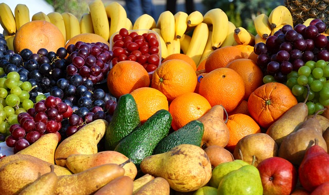
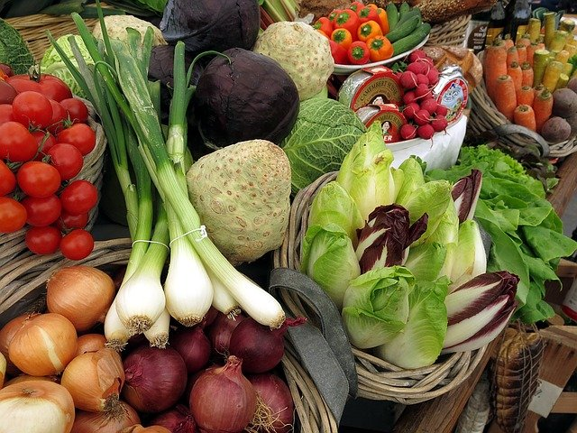
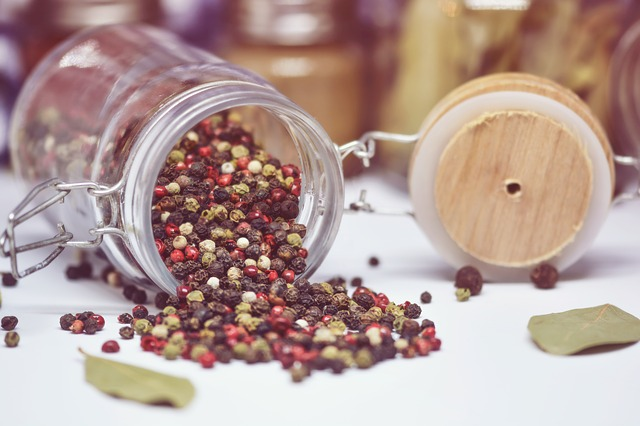
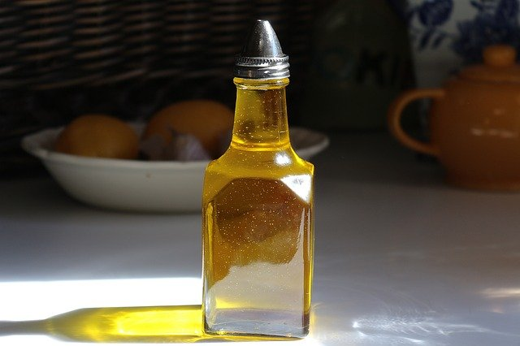
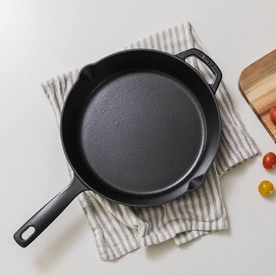
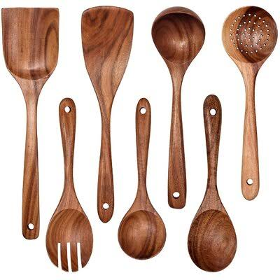
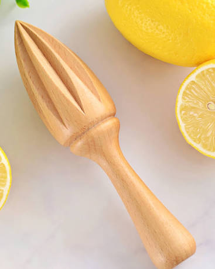
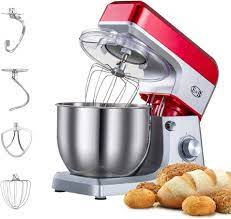

Vegetables are parts of plants that are consumed by humans or other animals as food. The original meaning is still commonly used and is applied to plants collectively to refer to all edible plant matter, including the flowers, fruits, stems, leaves, roots, and seeds. An alternate definition of the term is applied somewhat arbitrarily, often by culinary and cultural tradition. It may exclude foods derived from some plants that are fruits, flowers, nuts, and cereal grains, but include savoury fruits such as tomatoes and courgettes, flowers such as broccoli, and seeds such as pulses. Reference: ref to fruit

Vegetables play an important role in human nutrition. Most are low in fat and calories but are bulky and filling. They supply dietary fiber and are important sources of essential vitamins, minerals, and trace elements. Particularly important are the antioxidant vitamins A, C, and E. When vegetables are included in the diet, there is found to be a reduction in the incidence of cancer, stroke, cardiovascular disease, and other chronic ailments. Research has shown that, compared with individuals who eat less than three servings of fruits and vegetables each day, those that eat more than five servings have an approximately twenty percent lower risk of developing coronary heart disease or stroke. The nutritional content of vegetables varies considerably; some contain useful amounts of protein though generally they contain little fat, and varying proportions of vitamins such as vitamin A, vitamin K, and vitamin B6; provitamins; dietary minerals; and carbohydrates.

Vegetables are parts of plants that are consumed by humans or other animals as food. The original meaning is still commonly used and is applied to plants collectively to refer to all edible plant matter, including the flowers, fruits, stems, leaves, roots, and seeds. An alternate definition of the term is applied somewhat arbitrarily, often by culinary and cultural tradition. It may exclude foods derived from some plants that are fruits, flowers, nuts, and cereal grains, but include savoury fruits such as tomatoes and courgettes, flowers such as broccoli, and seeds such as pulses.
Vegetables are parts of plants that are consumed by humans or other animals as food. The original meaning is still commonly used and is applied to plants collectively to refer to all edible plant matter, including the flowers, fruits, stems, leaves, roots, and seeds. An alternate definition of the term is applied somewhat arbitrarily, often by culinary and cultural tradition. It may exclude foods derived from some plants that are fruits, flowers, nuts, and cereal grains, but include savoury fruits such as tomatoes and courgettes, flowers such as broccoli, and seeds such as pulses.
| UTENSIL | TYPE | NAME | SIZE |
|---|---|---|---|
|
 |
Cookware | Skillet | Medium |
|
 |
Hand Tool | Wooden Spoon | Small |
 |
Hand Tool | Citrus Reamer | Small |
|
 |
Electronic Appliance | Stand Mixer | Big |